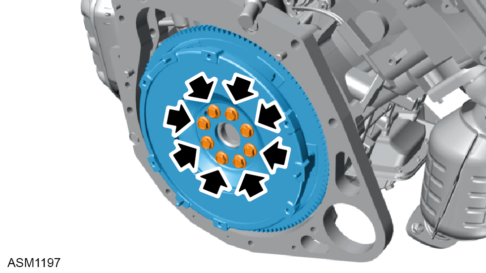
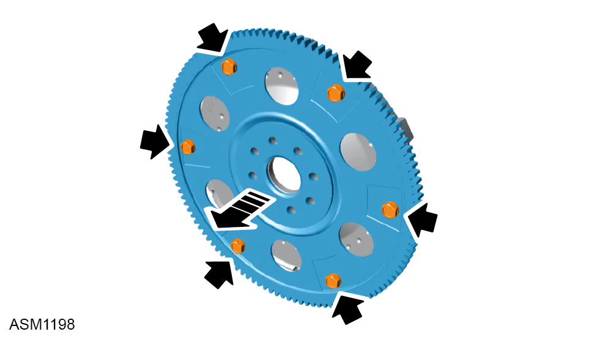

Flywheel - V6
Print
Operation Code: 40.11.14-02
Removal
- Remove clutch assembly. Refer to procedure.
- Use suitable flywheel holding tool to lock flywheel ring gear to engine block.

- Remove flywheel bolts (x8) securing flywheel to engine. Torque 75 Nm.
- Remove flywheel from engine block.
NOTE: The spacer ring between the flywheel and engine may fall out during removal.
- Remove spacer ring from engine block.
Do not carry out further disassembly if removing for access only.

- Remove bolts (x6) and washers securing flywheel ring gear to flywheel. Torque 30 Nm.
- Remove flywheel ring gear.
Installation
- Installation is the reverse of removal procedure except for the following:
- Clean flywheel and ring gear mating surfaces with suitable degreaser.
- Apply single bead of permabond A130 to flywheel bolts (x8).
 CAUTION: The permabond A130 acts as both a thread lock and sealant to prevent oil leaking from engine onto flywheel and clutch assembly.
CAUTION: The permabond A130 acts as both a thread lock and sealant to prevent oil leaking from engine onto flywheel and clutch assembly.
- Progressively tighten flywheel ring gear and flywheel bolts in a diagonal pattern.